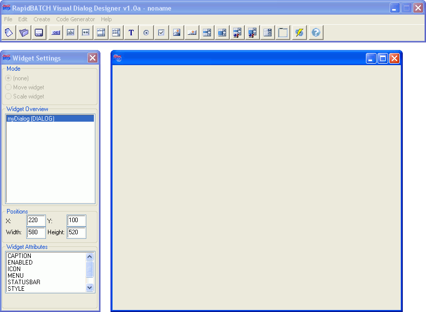

Introducion
RapidBATCH Visual Dialog Designer allows you to create user interfaces for your RapidBATCH scripts in a comfortable way, by placing and editing widgets and their attributes in a WYSIWYG-view (What You See Is What You Get) directly on the screen. Window-Elements, the so called Widgets, can be visually moved and scaled with the mouse on the dialog, attributes can be edited and changed on-line. If the dialog is finally finished, the Dialog Designer is able to generate the necessary RapidBATCH script-code as an already running prototype, including an event-framework, that only needs to be extended with the functional code the script should process when the correspondig event happened.
RapidBATCH Visual Dialog Designer makes the development of dialogs as easy as possible!
Therefore, RapidBATCH Visual Dialog Designer is a time-safing possibility to create and design individual, graphical user interfaces, and equips the RapidBATCH scripting platform to a RAD (Rapid Application Development) environment for fast Windows-application development.
Please note, that the RapidBATCH Visual Dialog Designer is a core RapidBATCH script implementation, it was written for 100% in RapidBATCH itself! So this program is also a demonstration on the possibilities RapidBATCH 5's powerful scripting technology already provides.
This online-help introduces you now step-by-step into the usage of Visual Dialog Designer's environment. Note, that this tool is only an assistance for RapidBATCH dialog development, not a substituation. Knowledges on how dialogs are created manually should be available, also knowledges on the different widgets and their attributes and events. Please study the RapidBATCH User's Manual first if you do not have this knowledge yet, before you continue.
Copyright © 2000-2006 by J.M.K S.F. Software Technologies, Jan Max Meyer
All rights reserved.